Student guide
On this page 10 topics
Use this guide for class assessments and personal practice. A class quiz is assigned by a lecturer and may be a practice quiz or an assessment. A personal quiz is yours to create and practice; it is not class work and does not produce a class grade. A class quiz marked Live is available subject to its schedule and attempt rules. Draft quizzes are not available to students; Closed quizzes cannot be started.
Create an account or sign in
Where to go: Open your institution's Easy2U address and choose Create account or Sign in. You need internet access and an email address. Use an institutional Microsoft account only if that option is offered by your institution.
Create a student account
- Open Create account.
- Enter your Full name, Email address, and Password. The form requires a password of at least six characters.
- Under I am a…, choose Student and enter your Matric number. The form describes the expected matric format.
- Read Biometric Consent, including its notice that camera/microphone footage before an integrity incident may be recorded and reviewed. Select I understand and consent to face verification for assessments only if you agree. This account consent is required to create an account; face capture is a separate step described below.
- Select Create account. If the app asks you to confirm your email, follow the email instructions, then return to Sign in. Otherwise, the app signs you in and opens My Classes.
What happens next: Your account's student role opens the student area. If you arrived through a class QR code, the app should return you to the class join confirmation after registration/sign-in.
If it does not work: Check the displayed form error and correct the field it names. If an institution requires a matric number during a later sign-in flow, complete that prompt. See Troubleshooting.
Sign in, reset a password, or sign out
- Open Sign in and enter Email address and Password.
- If your institution offers a Microsoft sign-in option, select it and complete the provider's prompts. This option is institution-dependent and may not appear.
- If a matric capture prompt appears for your institutional account, enter the matric number requested and submit it once. This is an account setup step; the application returns you to the page you were trying to open when possible.
- To reset a forgotten password, select Forgot password?, enter your email, and select Send reset link. Open the message sent to that address and use its link to set a new password. The confirmation message is generic whether or not an account exists.
- To sign out, open the account menu and choose Sign out.
What happens next: A successful student sign-in opens My Classes, unless you followed a QR/share link that returns you to its destination.
If it does not work: Check that the email and password are correct. If the reset email does not arrive, check spam and verify the address; contact your institution's account administrator if you cannot access that mailbox. Do not repeatedly guess a password. See Troubleshooting.
{kind=link}
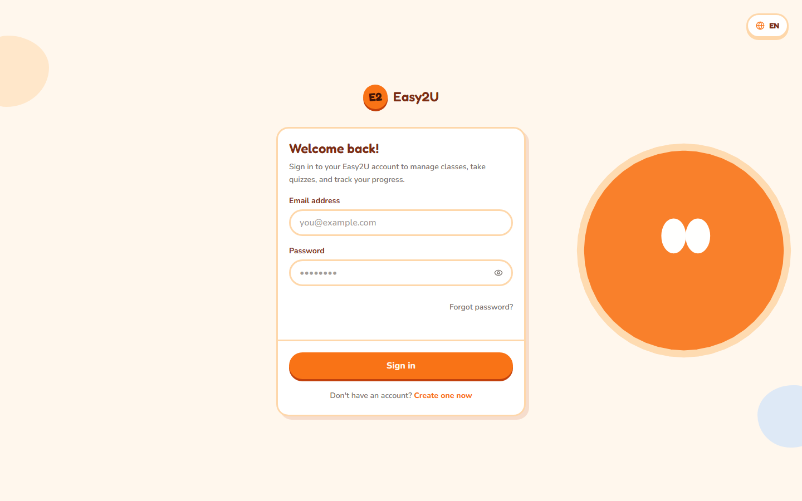
Find your way around
Desktop — different navigation. Use the top navigation: My Classes, Class Quizzes, My Quizzes, and Face Setup. Open the account control to see account information and Sign out. The bell opens notifications; its badge shows how many are unread. Select a notification to open its related page and mark it read, or select Mark all as read. The language control switches between EN and BM. The theme control cycles through Light, Dark, and System.
Phone — different navigation. Use the bottom navigation to open My Classes, Class Quizzes, My Quizzes, or Face Setup. The header keeps the brand, notification bell, and account avatar; select the avatar for the account sheet. Language and theme controls are in that sheet and work the same way as on desktop. The notification badge shows unread items; opening a notification marks it read.
{kind=link}
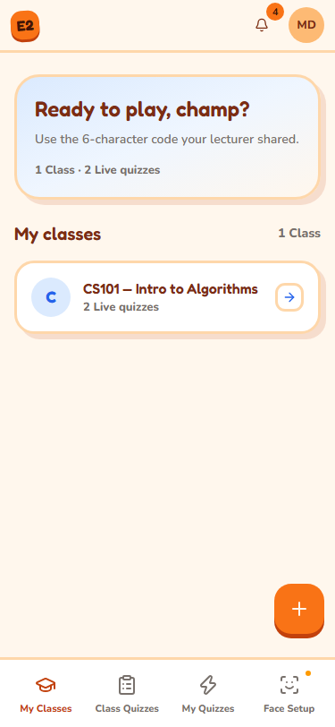
What happens next: My Classes is the place to join a class; Class Quizzes lists available class quizzes; My Quizzes is for personal practice quizzes.
Join a class
Where to go: Sign in, then open My Classes. Get the six-character join code or class QR from your lecturer. You must be signed in as a student.
{kind=link}
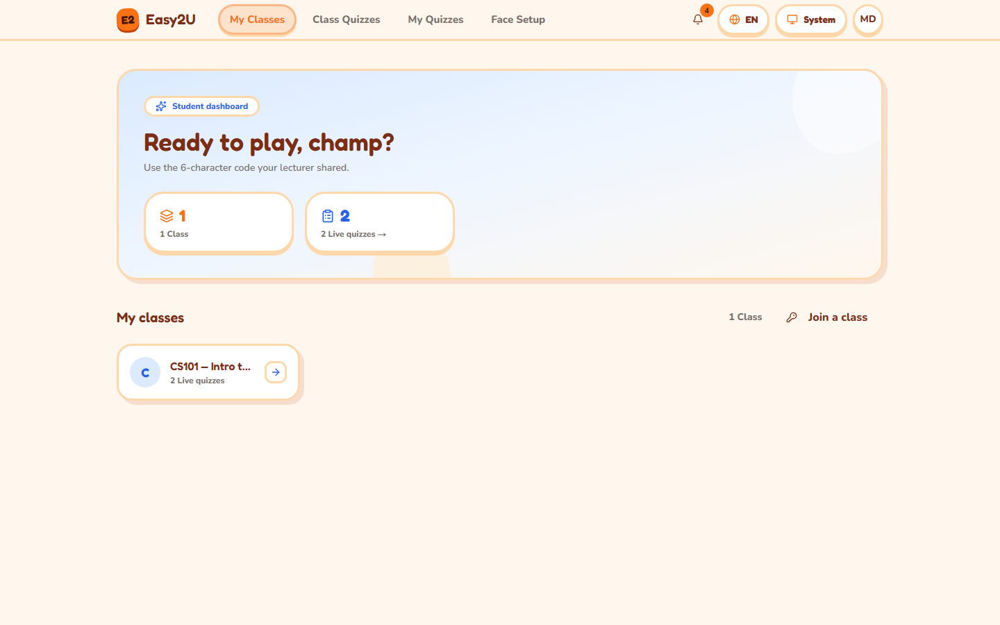
Join with a code
- Desktop: Select Join a class on the classes page. Phone: Select the floating Join a class control on My Classes; it opens a bottom drawer. If you have not joined any class yet, select Enter a join code.
- Enter the six-character code in Join code. The entry accepts uppercase letters and numbers; codes exclude ambiguous characters.
- Select Join class.
{kind=link}
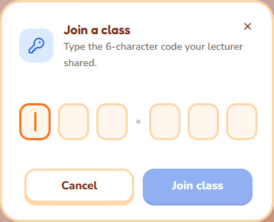
{kind=link}
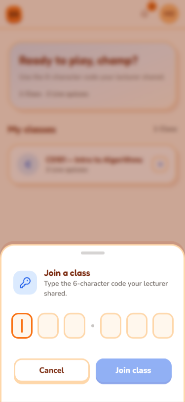
What happens next: A success notice names the class, and the class appears under My Classes. Selecting its class card opens the class-filtered quiz list.
Join from a QR code
- Scan the QR code your lecturer provides with your phone camera. The code opens the class confirmation page.
- If asked, sign in or create a student account. The app returns to the pending join confirmation.
- Check the class join code shown on screen, then select Join class.
What happens next: The app confirms the join and returns to My Classes. Scanning alone does not join you; confirm the action on the page.
If it does not work: Check all six characters with your lecturer. A code may be invalid or for an archived class; repeated incorrect attempts may temporarily lock joining. If you already joined, the app reports that state. See Troubleshooting.
Find a class quiz
Where to go: Open Class Quizzes. To focus on one class, select its card from My Classes; the quiz list is then filtered to that class. A quiz must be live and within its availability window.
{kind=link}
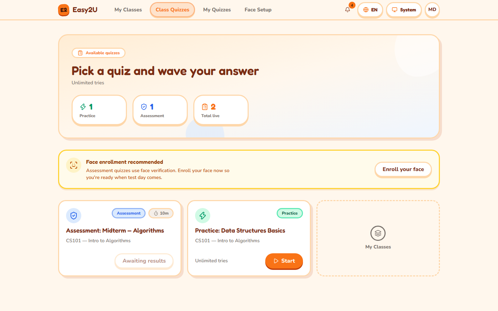
- Find the quiz by its title. Read its mode, due/deadline information if shown, time limit, and attempt status before starting.
- Treat Practice as practice feedback and Assessment as graded class work. Correct answers may be hidden for an assessment until the lecturer releases results.
- If the quiz is scheduled, wait until its opening time. If it is closed or the deadline has passed, contact the lecturer about availability.
- Select Start to begin, or use the available resume/retake action shown on the quiz card. Retakes appear only when the lecturer has allowed them and attempts remain.
Phone: The same quiz states and actions appear in the compact list. Select the Remove class filter control when a class filter is active to return to all class quizzes.
{kind=link}
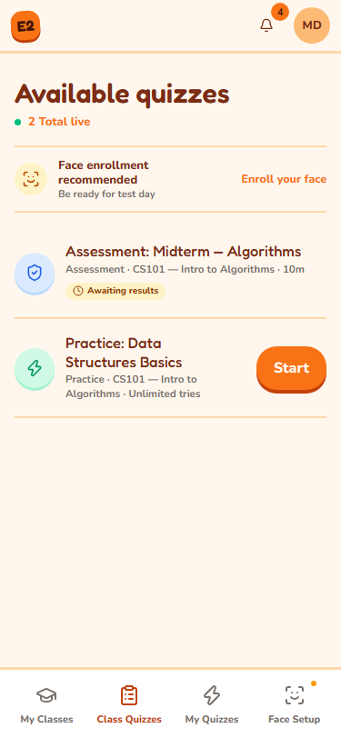
What happens next: The quiz player opens. For an assessment, follow Set up face verification if required and then Take and submit an assessment.
If it does not work: “Not open” means the scheduled window has not begun; “window closed” means it has ended. If the card says Awaiting results, the lecturer has not released your result yet. See Troubleshooting.
Set up face verification
Where to go: Open Face Setup from the top or bottom navigation, or select Enroll your face on the class quiz page. Some assessments require face verification; your lecturer or institution may configure different checks.
{kind=link}
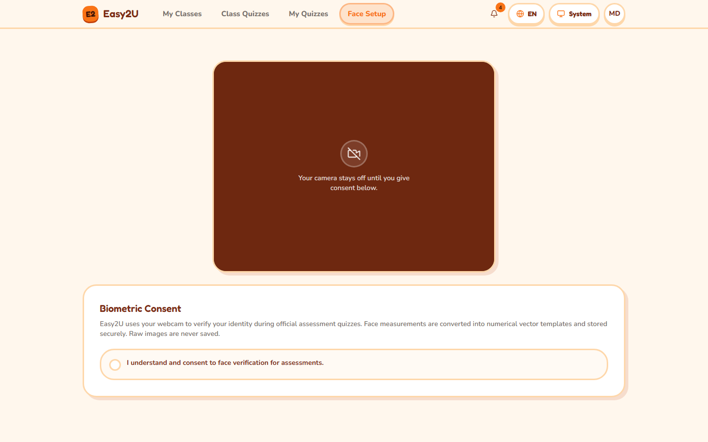
- Read Biometric Consent. Select I understand and consent to face verification for assessments only if you agree to the described camera and face processing. The camera remains off until you grant consent.
- Allow camera access when your browser asks. Use a working front-facing camera in a well-lit place. Close other apps or tabs using the camera.
- Center one face in the guide. Follow the on-screen instruction to blink and turn your head to the front, left, and right positions. Wait for each angle to complete before moving to the next.
- Wait for the result. The status may say enrollment succeeded or that it is pending review. Pending review is a normal review state, not an accusation; wait for the review to complete before starting an assessment that requires enrollment.
- If already enrolled, the page shows that status and offers Re-capture. Use it if your appearance or enrollment needs updating. Revoke Biometric Consent withdraws consent and can make face-required assessments unavailable until setup is completed again.
Phone: The page uses the phone camera and shows the pose/lighting status below the video. Keep the browser page in the foreground while capturing.
What happens next: Return to Class Quizzes and start the assessment. If review is pending, wait and check again.
If it does not work: For denied permission, change the browser's camera permission for Easy2U, return to the page, and select Retry. If there is no camera, another app is using it, the page is not secure, the room is dim, no face is detected, or multiple faces are visible, address that condition and select Try again. Do not try to bypass verification. If capture repeatedly fails or enrollment remains pending, contact your lecturer. See Troubleshooting.
Take and submit an assessment
Where to go: Open Class Quizzes, choose a live Assessment, and select Start. Read the instructions before beginning. A camera/liveness check or fullscreen prompt may appear depending on the quiz and institution settings.
{kind=link}
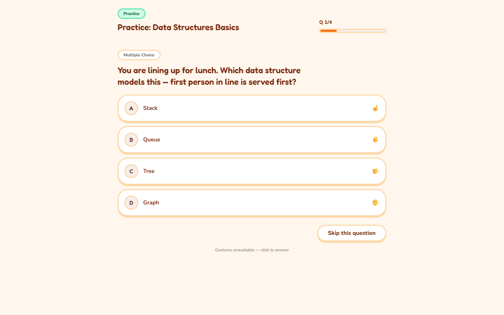
{kind=link}
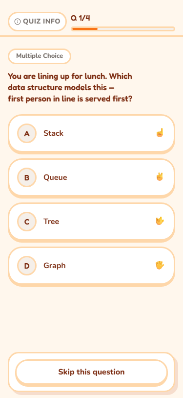
- At the assessment gate, allow camera access if asked. Center your face and follow the blink instruction. If the app asks for fullscreen, accept the browser prompt. Select Begin assessment when it becomes available.
- Read the question and its answer format. For a single-choice or true/false question, select one answer. For a multiple-select question, select every response you intend to submit, then select Confirm answer (or use the hand confirmation if it is enabled). For a short-text question, enter your response and select Submit answer.
- Select Next after answering to continue. To leave a question unanswered, select Skip this question, then select Next (or Finish on the last question). A skipped question is recorded as unanswered and counts as zero; you cannot change it after advancing.
- If hand gestures are enabled, hold the indicated hand pose steady and use the on-screen confirmation to choose or confirm an answer. If gestures are disabled, use the displayed answer and confirmation controls.
- Watch the timer if one is shown. When finished, select Finish. A timer may submit automatically when it expires. Do not close the tab before the completion screen appears.
Phone: Keep the quiz page visible. Browser camera/fullscreen prompts can cover the page; answer those prompts to continue. Use the on-screen controls by touch. The assessment gate may ask you to select Begin assessment after the face check; quiz controls use the same labels as desktop.
What happens next: The player displays an assessment completion/submission state. Results may remain hidden until the lecturer reveals them. If the connection drops or the page reloads, return to Class Quizzes and use the card's resume action if one is available; do not assume unsent answers were saved.
If it does not work: Follow Recover during a quiz and the During the quiz quick card. See also Troubleshooting.
Recover during a quiz
Where to go: Stay on the quiz page and read the pause or warning overlay. A temporary pause is a protection/recovery state and does not by itself mean your attempt was flagged.
- Follow the message on the overlay. If it asks you to verify your face, center your face and blink when prompted.
- If the camera stopped, restore the browser's camera permission, close any other app using the camera, and use the displayed retry/recovery action.
- If the page lost focus or fullscreen, return to the quiz tab and re-enter fullscreen if prompted.
- If the overlay says to wait for your lecturer to unlock the attempt, contact the lecturer and give them the quiz title and approximate time of the pause. Do not start a second attempt unless the quiz card explicitly offers a retake.
- When the player resumes, check the question and timer. The app may save answers as you go, but do not assume an answer was saved if the connection failed before the player acknowledged it.
Phone: Keep the quiz page in the foreground; close notifications or other apps that take over the screen. Re-allow camera access in the browser if needed.
What happens next: A successful recovery returns you to the quiz or assessment gate. For a timed assessment, the countdown pauses during the recovery pause and resumes afterward.
If it does not work: Do not repeatedly reload or attempt to bypass the gate. Note the message and time, then ask your lecturer to inspect or unlock the attempt. See Troubleshooting.
For a compact recovery reference, open the During the quiz card.
See your results
Where to go: Open Class Quizzes and find the completed quiz.
- If the card says Awaiting results, the lecturer has not revealed the result. You cannot open a score yet; check later or contact the lecturer if the release date has passed.
- After release, select View results on the quiz card. The player results screen shows your score and, when enabled, question review/feedback.
- For practice quizzes, feedback may appear immediately after completion. Use the review displayed by the player.
Phone: Use Class Quizzes in the bottom navigation. The same Awaiting results and View results states are available in the compact list.
What happens next: The result remains available from the quiz card while the quiz and account remain available.
If it does not work: If the result is still awaiting release, ask your lecturer when it will be available. If the quiz is missing, check that you joined the correct class and remove any active class filter. See Troubleshooting.
Make a personal practice quiz
Where to go: Open My Quizzes. Personal quizzes belong to your account and are for practice; they do not count as class assessment results.
{kind=link}
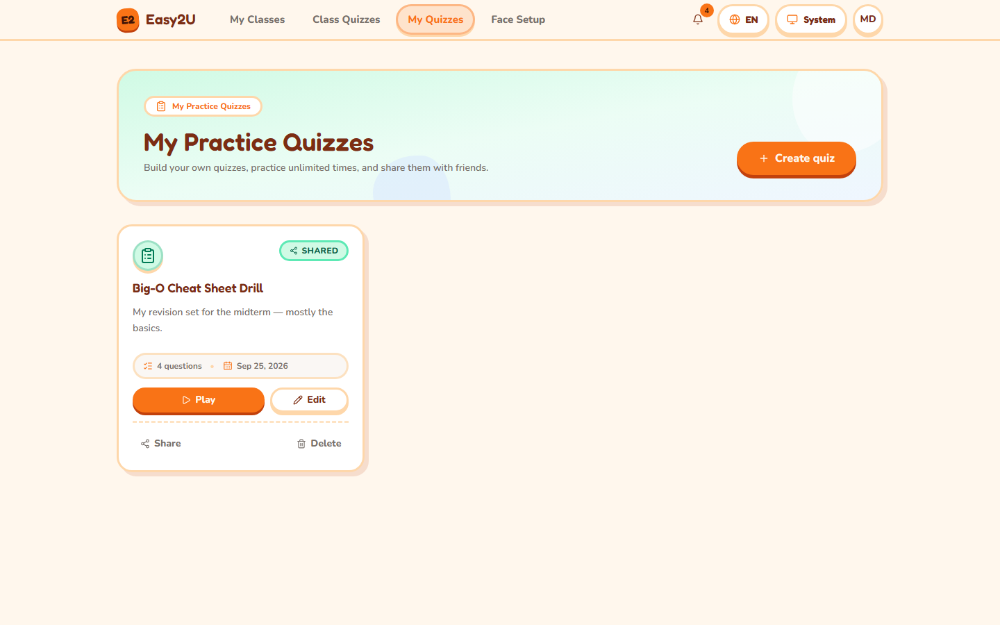
- Select Create quiz, enter a Title, then select Create quiz again to make the quiz.
- In the editor, enter the question prompt and answer choices or response details for the question type shown. Choose the correct answer when that option is provided.
- Select Add this question. Repeat for more questions. Use the editor's controls to edit, reorder, or delete questions; attach an image only if the image control is available.
- If AI question generation is offered, review every generated question and answer before using it. Availability depends on institution configuration.
- Return to the quiz list and select Start or the preview/play action to practice.
Phone: Open My Quizzes from the bottom navigation. The editor uses compact controls and opens question entry in a sheet. Follow the visible save/add controls.
What happens next: Your quiz appears in My Quizzes and can be played as personal practice.
If it does not work: Check required title, prompt, and answer fields. If an image or AI option is absent, it may not be enabled for your account. See Troubleshooting.
Share or stop sharing a personal quiz
Where to go: Open My Quizzes and choose Share on the quiz you own.
- Copy the displayed share link and send it to the intended recipient yourself. Anyone with an active share code may be able to open the practice content; share it accordingly.
- To invalidate the current link, select New code, then Confirm. Give recipients the new link. The old link becomes unavailable.
- To stop sharing, select Stop sharing. The old link becomes unavailable. A recipient already playing may lose access to questions/feedback as the quiz is unshared.
- A recipient opens the shared link. If prompted, they sign in or create an account, then reopen the link and select Start practice.
Phone: Open My Quizzes in the bottom navigation and use the quiz's Share action. The share dialog is responsive; follow the displayed controls.
What happens next: A valid link opens the community-made practice quiz. A revoked, rotated, invalid, or unavailable code shows an unavailable message.
If it does not work: Confirm you copied the full current link and that the owner has not rotated the code or stopped sharing. Ask the owner for a fresh link. See Troubleshooting.